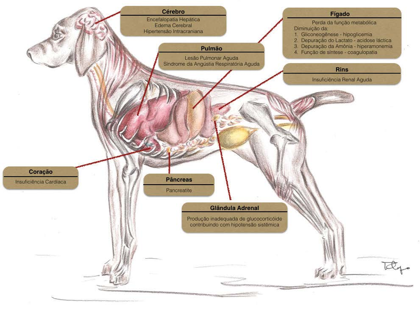

ENCEFALOPATIA HEPÁTICA

O QUE É?
AEncefalopatia Hepáticaé uma síndrome
metabólica, geralmente de caráter
reversível, caracterizada por
uma condição neurológica que afeta
cães com alteração na funcionalidade
do fígado (doença hepática). Podendo
causar alterações comportamentais,
dificuldade ou incapacidade de manter a
coordenação motora, exigindo diagnóstico
e tratamento precoces para evitar complicações.
Diagnóstico
O acompanhamento veterinário é essencial
para prevenção de qualquer doença. Mas caso
seja observado algum dos sintomas abaixo fique
atento e procure um profissional.
• Desorientação
• Perda da coordenação motora
• Tremores
• Letargia
• Sonolência

Os cuidados com cães que já apresentam sintomas
da doença hepática, Shunts congênito ou infecção
hepática devem ser dobrados.
Fatores de risco:
• Idade avançada
• Obesidade
• Dieta inadequada
Tratamento
• Tratamento nutricional
(dietas com baixo teor de
proteínas como, laticínios,
carne vermelha, leguminosas
e cereais junto de
suplementação de probióticos e prebioticos)
• Tratamento medicamentoso
(Uso de fármacos que reduzem
a absorção de amônia)
• Tratamento de suporte (Fluidoterapia
e tratamento da doença hepática)
Prevenção - suporte nutricional
O suporte nutricional para a doença hepática é
fundamentado em quatro aspectos principais:
• Manutenção do equilíbrio do nitrogênio,
visando evitar sintomas de encefalopatia hepática,
por meio do consumo de proteínas vegetais de
alta qualidade e valor biológico.
• Redução do teor de cobre na dieta e
aproveitamento da competição entre o cobre
e o zinco pela absorção intestinal.
• Incorporação de fibras fermentáveis na
alimentação para reduzir a absorção de
amônia e outras toxinas bacterianas no cólon.
• Utilização de um complexo de vitaminas
antioxidantes e microminerais que contribuam
para o metabolismo, minimizando os efeitos dos
metabólitos e reduzindo a carga sobre o fígado.
Em determinadas raças de cães, observa-se uma
sensibilidade hepática específica, como é o caso
das raças West Highland Terrier, Cocker Spaniel,
Labrador Retriever, Dobermann e Pinscher. Além disso,
algumas raças, como West Highland White Terrier,
Bedlington Terrier, Skye Terrier e Dálmata,
são propensas a desenvolver uma condição conhecida
como doença de estocagem de cobre. Essas predisposições
genéticas tornam esses cães mais suscetíveis a distúrbios
hepáticos específicos, exigindo monitoramento e cuidados
especiais para manter sua saúde hepática.
NOS SIGA NAS REDES SOCIAIS